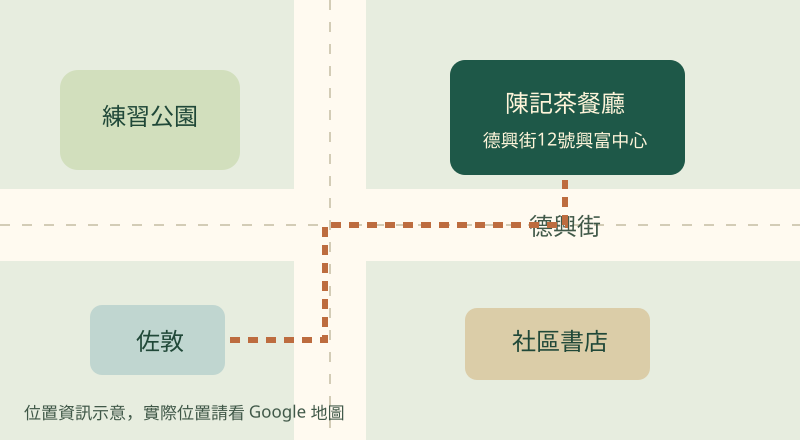

位置及營業時間
餐廳地址

佐敦德興街12號興富中心
每日07:00–20:00。
| 日期 | 開店 | 關店 |
|---|---|---|
| 星期一至五 | 07:00 | 20:00 |
| 星期六、日 | 07:00 | 20:00 |
| 公眾假期 | 07:00 | 20:00 |
| 每日供應早餐、午餐及下午茶。 | ||
陳記茶餐廳

佐敦德興街12號興富中心
每日07:00–20:00。
| 日期 | 開店 | 關店 |
|---|---|---|
| 星期一至五 | 07:00 | 20:00 |
| 星期六、日 | 07:00 | 20:00 |
| 公眾假期 | 07:00 | 20:00 |
| 每日供應早餐、午餐及下午茶。 | ||